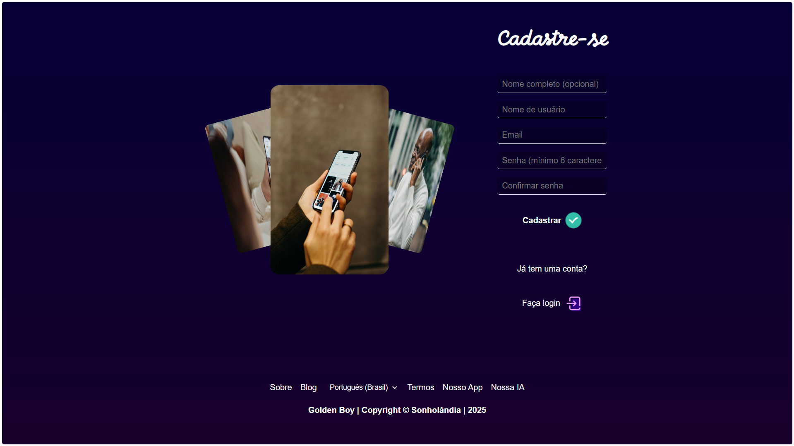
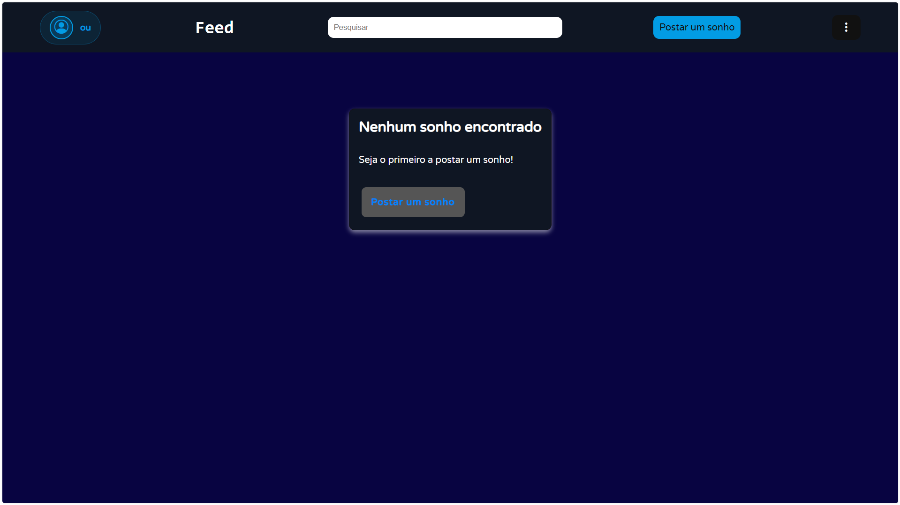
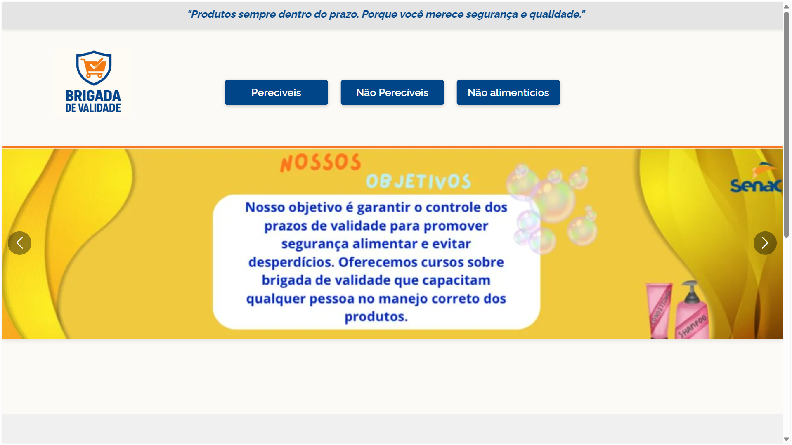
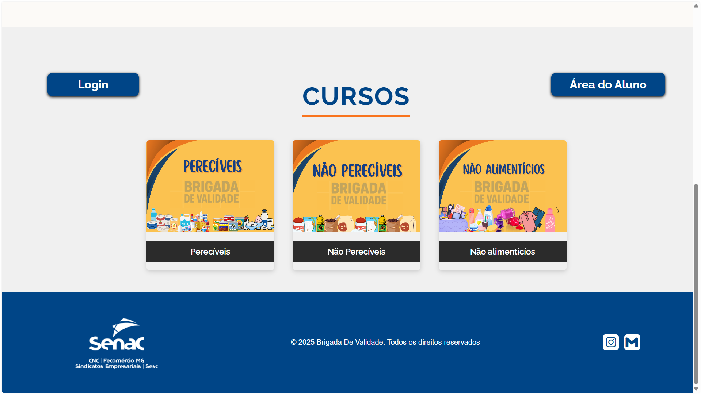
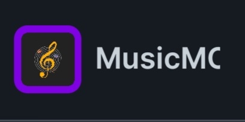
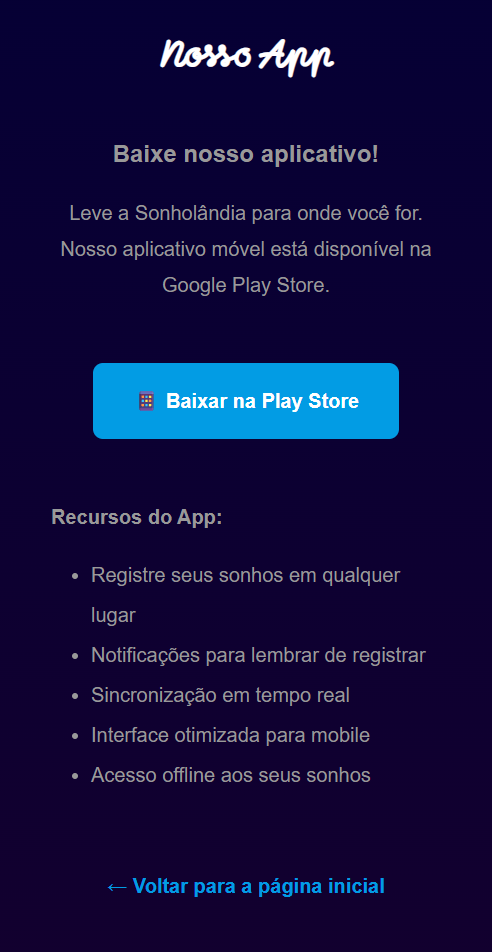

Matheus César
É devagar, até ser rápido demais...Quem sou eu?
Sou um jovem de 17 anos, apaixonado por programação e Inteligência Artificial. Nasci em Uberlândia e pretendo seguir carreira nessa área. Embora ainda esteja definindo meu nicho exato, tenho um histórico de exploração em articleersas frentes: jogos, cybersegurança, IA, Web, Arduino, e IoT.
Atualmente, estou descobrindo o melhor caminho a seguir, mas meu maior brilho nos olhos sempre foi para IA e Cybersegurança. Além do código, tenho um forte interesse pela dinâmica da internet e mídias sociais, especialmente o YouTube.
Interesses e Tecnologias
Sempre fui fascinado por Hacking, Deep Web, Games, IA, criatividade e inovação. Meu objetivo principal é construir e desenvolver ferramentas que as pessoas usem regularmente — sites, apps e serviços que agreguem valor real ao dia a dia do usuário.
Linguagens e Ferramentas:

HTML
Level: 8/10CSS
Level: 8/10JavaScript
Level: 5/10Tailwind CSS
Level: 4/10
Python
Level: 7/10
C
Level: 3/10
C++
Level: 3/10React Native
Level: 4/10Veja alguns projetos que já fiz:
Sonholândia
Site para compartilhar sonhos e descobrir significados com a ajuda de IA e profissionais.


Brigada de Validade
Projeto integrador do Senac (2025) focado na logística de produtos perecíveis e não-perecíveis.


Metas para 2026
Fazer a versão mobile de projetos anteriores e lançar novas ideias do papel:
MusicMC (Android / iOS)
App reprodutor de música completo, permitindo baixar músicas e vídeos diretamente.

Sonholândia (Mobile)
Versão dedicada do projeto em desenvolvimento, mantendo as funcionalidades da Web.

Pontos fracos / de melhora
O que eu fingi saber nesse meu tempo trabalhando com programação?
- Domínio total na lógica de programação
- Falta de comentários
- Saber usar a IA ao meu favor
Não só eu, mas qualquer um aprende de fato a lógica de qualquer linguagem de programação praticando e colocando a mente para funcionar.
Isso não é bem necessariamente uma falha, mas em arquivos grandes e extensos, a falta de comentários me atrapalha no desenvolvimento e na manutenção.
Infelizmente, ainda não sei usar a IA da forma certa, sem depender demais dela, além de não saber extrair todo o potencial dela com poucos prompts.
Onde eu perdi tempo de forma vergonhosa?
- Quando eu estou concentrado em aprender algo que precisa para avançar no desenvolvimento de um determinado projeto, e durante os estudos não sei acessar direito a documentação, ou desvio o tema principal para algo secundário que não me levará ao que quero no fim, perdendo assim meu foco na tarefa principal.
- Quando penso em fazer um projeto, um site, uma página, um app e no meio do caminho desisto, devido à falta de motivação, interesse, ou recursos.
- Já perdi horas e até dias, por causa de falta de foco no que realmente importa, e não ir até o fim com projetos alternativos.
O que um dev identificaria em 5 minutos no meu código?
Problemas de espaçamento, identação, erros de sintaxe, organização do código, a falta de comentários e a tamanha dependência da IA no código.
Como eu justificaria meu baixo desempenho para um RH?
"Eu sou um dev iniciante, e ainda não sei gestar bem o meu tempo quando estou trabalhando"
"Devido a minha falta de foco, não entreguei o projeto dentro do prazo."
"Dependo muito da IA para fazer coisas que não sei fazer sozinho."
"Não priorizei essa tarefa, porque tinham outras coisas eram mais urgentes."
"Sou um pouco lerdo e lento para pensar às vezes, principalmente quando não tenho domínio ou confiança do tarefa."
Contato
Quer conhecer mais do meu perfil? Acesse meus links abaixo: